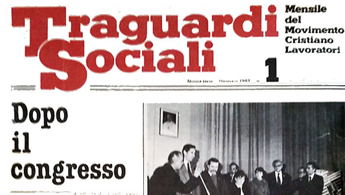
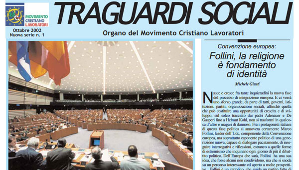
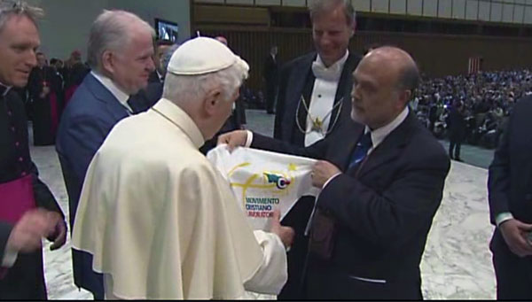

La storia del movimento attraverso foto e locandine

Primo Congresso Nazionale 1972

Seconda Congresso Nazionale 1974

Prima Congresso Nazionale giovani 1975

Udienza con il Papa Paolo VI

Secondo Congresso Nazionale a Napoli nel 1977

Terzo Congresso Nazionale a Roma nel 1980

Seconda Edizione di "Traguardi Sociali" organo di stampa ufficiale del MCL

Decennale MCL incontro con Papa Giovanni Paolo II

Quarto Congresso Nazionale a Roma nel 1983

Quinto Congresso Nazionale a Roma nel 1986

Madre Teresa di Calcutta scrive ai Giovani MCL una lettera sul tema "Libertà, un impegno per i giovani"

Sesto Congresso Nazionale a Chianciano Terme nel 1989

Ventennale MCL, udienza con Papa Giovanni Paolo II

Settimo Congresso Nazionale a Santa Tecla,Acireale nel 1993

Ottavo Congresso Nazionale a Roma nel 1996

Seminario Nazionale di Studi a Senigallia nel 2000

Nono Congresso Nazionale a Roma nel 2001

Terza Edizione di "Traguardi Sociali"

Decimo Congresso Nazionale 2005

Undicesimo Congresso Nazionale 2009

Incontro con il Papa Benedetto XVI

Quarantennale del Movimento Cristiano Lavoratori 2012

Dodicesimo Congresso Nazionale 2014